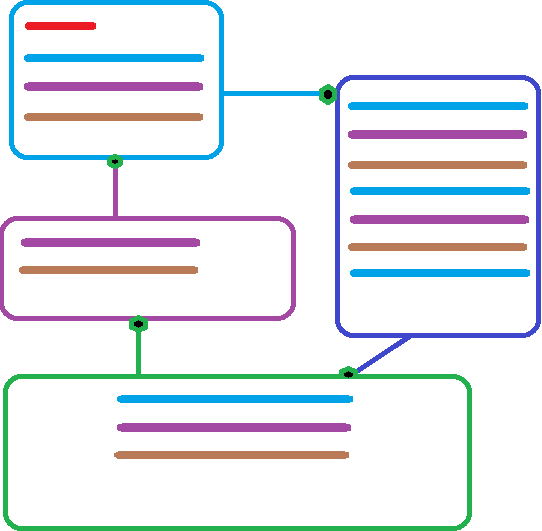
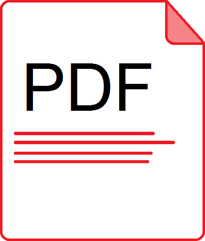

UML e PU
O primeiro dia foi muito interessante (e um pouco desesperador), uma vez que não tenha feito as disciplinas anteriores sobre gestão de software, conheci várias ferramentas (algumas já havia ouvido falar como metodologias em cascata e SCRUM), que são muito importantes na hora de se levantar requisítos e organizar como o desenvolvimento se dará.
UML é um exemplo de ferramenta que não conhecia mas que traz uma forma de organização gráfica muito interessante. Já havia ouvido falar por meio de um professor do instituto mas não havia procurado sobre ainda, e olhando agora, parece como um fluxograma de tarefas.
Também foi citado o Processo Unificado, que é basicamente um meio de padronizar a criação de software e evitar problemas quando se incluir novos funcionários em uma empresa. Visa a não produção em escala, ou seja, os produtos são feitos sob medida para cada cliente. É um processo que passa por quatro etapas:
- Especificação do software (Pesquisa, levantamento de requisítos)
- Implementação (Operacional)
- Validação (Revisão)
- Evolução (Updates)
Há algumas práticas integradas a este modelo, e pode-se citar as seguintes:
- Desenvolvimento iterativo
- Gerenciamento de exigências
- Arquiteturas baseadas em componente
- Modelo visual
- Verificação intermitente de qualidade
- Controle de mudanças
Nessa metodologia especificamente, a forma de se utilizar é simples, há uma gráfico com quatro fases no topo e várias tarefas (disciplinas) em sua esquerda. Cada tarefa terá uma quantidade de tempo utilizado em cada fase, onde para o representar, se utiliza de formas onduladas, geralmente, que quanto maior sua área, mais tempo investido em determinada fase.
Memorial do Aluno
Outro assunto tratado na aula foi sobre fazermos nossa própria biografia, e reservar algum local em nosso portfólio para a colocar, pois bem, não tenho um lugar para o inserir, então por hora vou colocar aqui.
